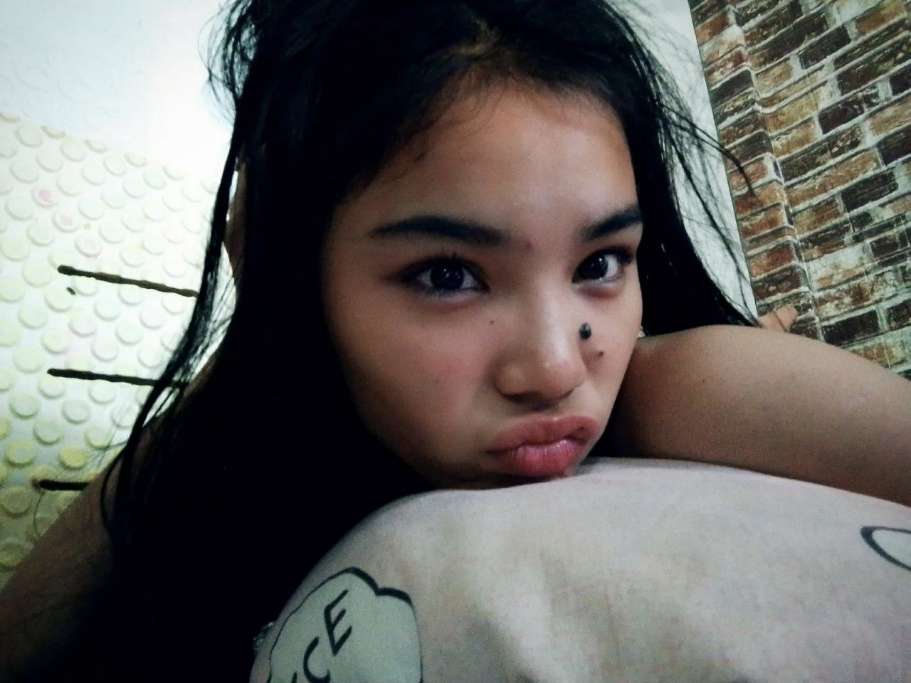

My name is Niña Mae Castanares, but I want to be called by my nickname, Nica. I was born in May 20, 2008. I grew up in the place where my parents grew up, Middle Tabucanal Poblacion Pardo Cebu City, I'm 17 years old. Studying in Asian College of Technology taking the STEM STRAND.
I love adventuring. I know how to dance but I don't want to call it a talent. I'm obsessed with my phone •~• My hobbies is play badminton and playing gentle music.
01
My strength is I am determined to finish what I set in my mind. I am responsible with task and roles given to me. I always try to learn, understand and grow in every experiences and mistake. I am always willing to improve my self each day. That strength help me face challenges and continue moving forward
02
I value my family especially my peace. I believe that respect begins respect and kindness is given to those who deserve kindness. Small actions can make a big difference. These Decisions help me protect my inner self and grow everyday
I want to succeed in my studies and continue learning from things I love to learn new skills that will help me in the future. I really want to build my confidence I want to grow as a person I want to become. I am working hard to become the person I always dream of.
Fun fact about me is I love abandoned places, I love how murder mind works I love to investigate accidents bodies I love crime scenes. I am obsessed with pink and red